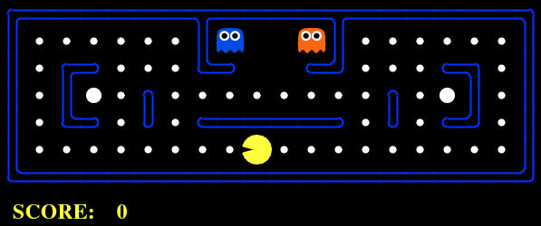
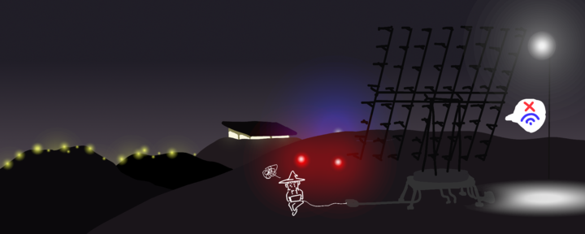
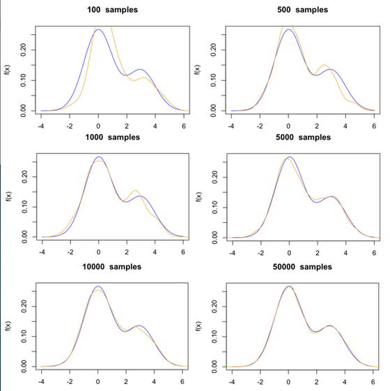
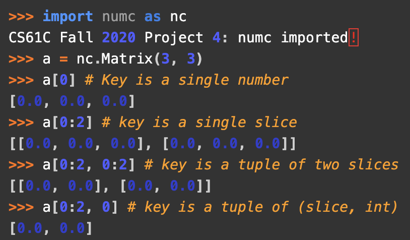
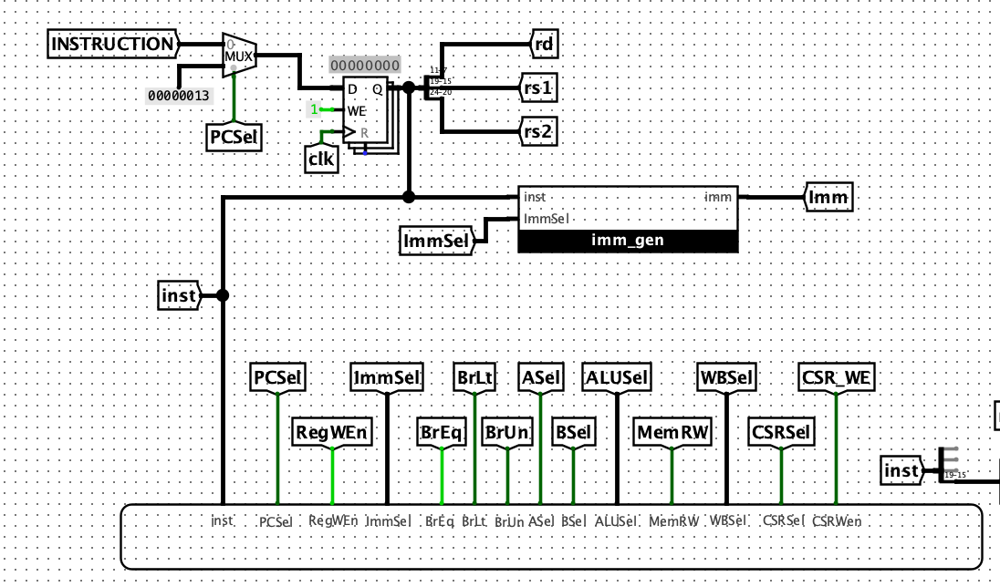
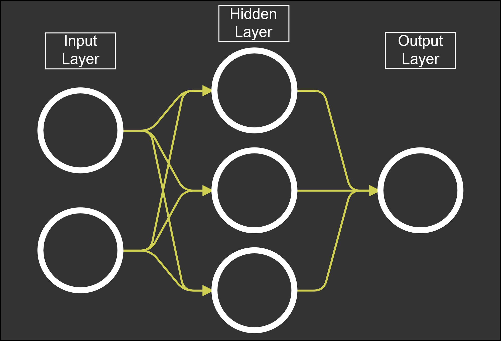
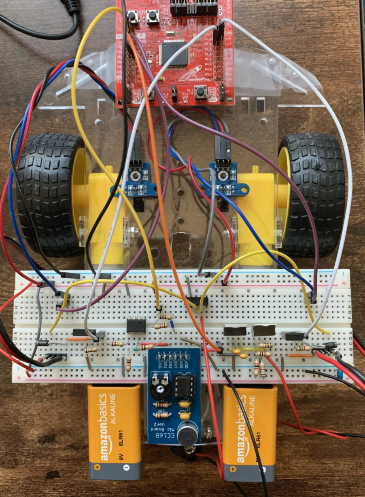
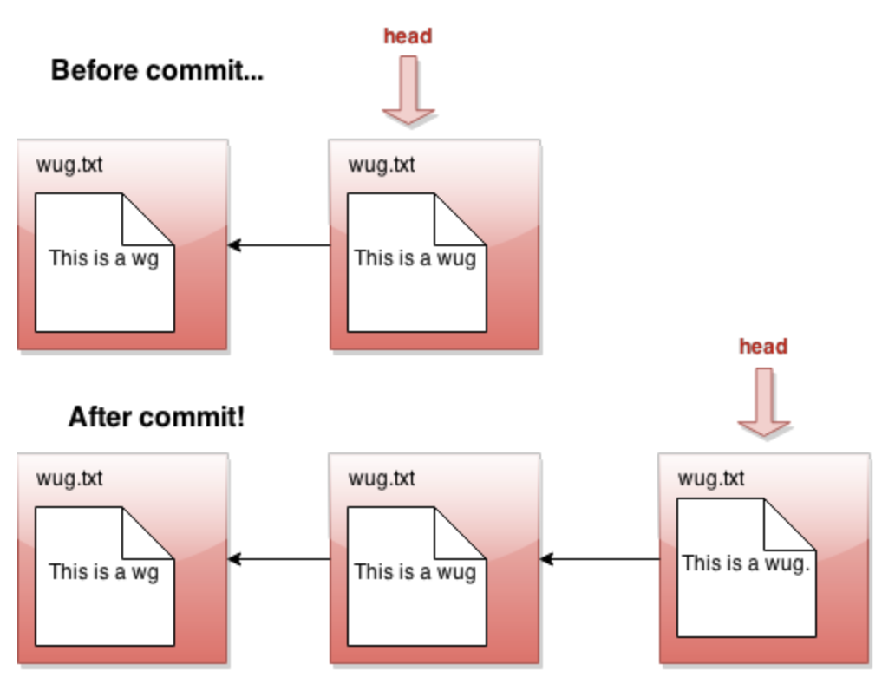
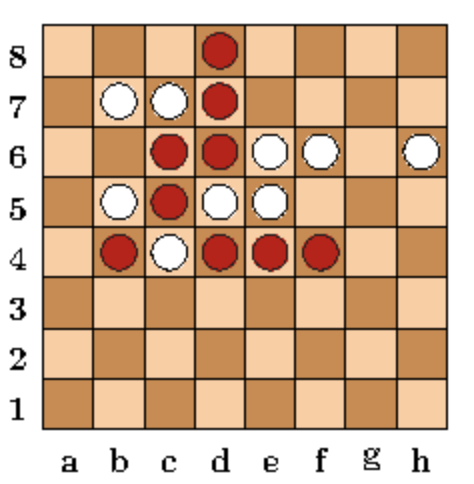
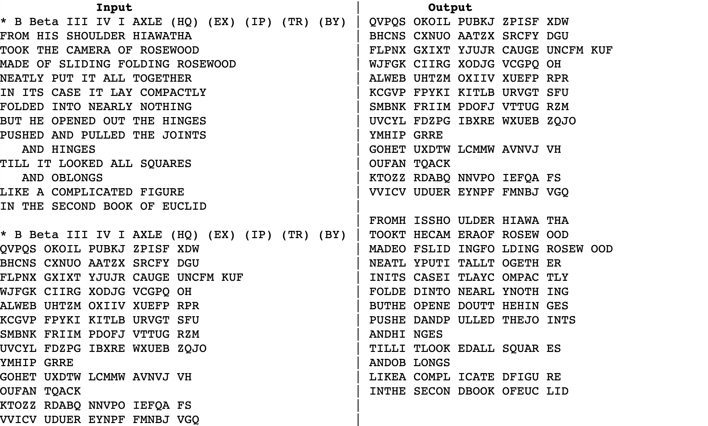

Classes
EECS16A: Designing Information Devices and Systems I
EECS16B: Designing Information Devices and Systems I
CS61A: Structure and Interpretation of Computer Programs
CS61B: Data Structures
CS61C: Computer Architecture (Machine Structures)
CS70: Discrete Math and Probability
Data100: Principles and Techniques of Data Science
CS170: Efficient Algorithms and Intractable Problems
CS186: Introduction to Database Systems
CS161: Computer Security
CS188: Introduction to Artificial Intelligence
CS162: Operating Systems and Systems Programming (Audited)

The Pac-Man Projects
CS188
June 2021 - August 2021
The Pac-Man Projects involved utilizing A*Search, Multiagent Minimax/Expectimax, Markov Decision Process, Q-Learning, Bayes Nets, Hidden Markov Models
to play a game of pac-man.

File Sharing System
CS161
February 2021 - May 2021
An end-to-end encrypted file sharing system like DropBox in Golang,
utilizing cryptography to ensure the server cannot view/tamper with user data.
View Design.

RookieDB
CS186
February 2021 - April 2021
RookieDB is a database that supports executing simple transactions: implemented
support for B+ tree indices, efficient join algorithms, query optimizations,
multigranularity locking to support concurrent execution of transactions, and
database recovery.

Zoom Breakout Rooms
CS170
December 2020
My team utilized the Markov Chain Monte Carlo algorithm to
approximate solutions to a NP-Hard problem where we had to assign
zoom breakout rooms to minimize stress/maximize happiness between
students.

numc
CS61C
December 2020
Numc is a version of Numpy written in C. My team implemented
arithmetic matrix operations and matrix slicing features. We also used
OpenMP and SIMD to speed up numc.

CS61CPU
CS61C
November 2020
CS61CPU is a CPU built using logic circuits to run RISC-V instructions.

CS61Classify
CS61C
October 2020
Classify is an artificial neural network built in RISC-V (assembly) to classify handwritten digits from the MNIST benchmark
set for CS61C.

Game of Life
CS61C
September 2020
The Game of Life, invented by mathematician John Conway, is a cellular automation, where the evolution
of each cell depends on the initial state and a provided game rule. I developed
a version of the Game of Life in C.

SIXT33N
EECS16B
June 2020
SIXT33N is a mobile robot on 3 wheels (2 drivable) that moves around according to voice inputs. It uses the MSP430 Launchpad
and some circuitry for driving the motor and sensing voice inputs through a microphone. SVD/PCA was used for voice recognition.

Gitlet
CS61B
May 2020
Gitlet is a version control system similar to Git that I developed in Java. It implements
the commands: init, add, commit, rm, log, global-log, find, status,
checkout, rm-branch, reset, and merge.

Lines of Action
CS61B
April 2020
Lines of Action is a two player board game. The objective is to connect all of one's pieces into a single group.
I developed LOA in Java and built an AI using the Minimax algorithm.

Enigma
CS61B
March 2020
Enigma is an encryption device that Germany used for military communication during World War II that use an electromechanical rotor mechanism to scramble
the letters of the alphabet. I developed a generalized version of Enigma in Java.